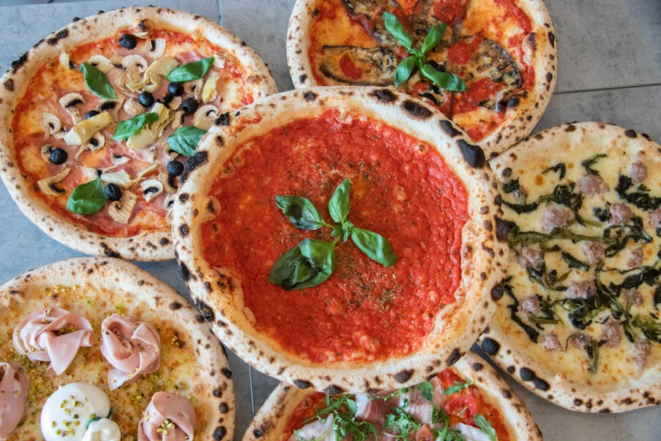
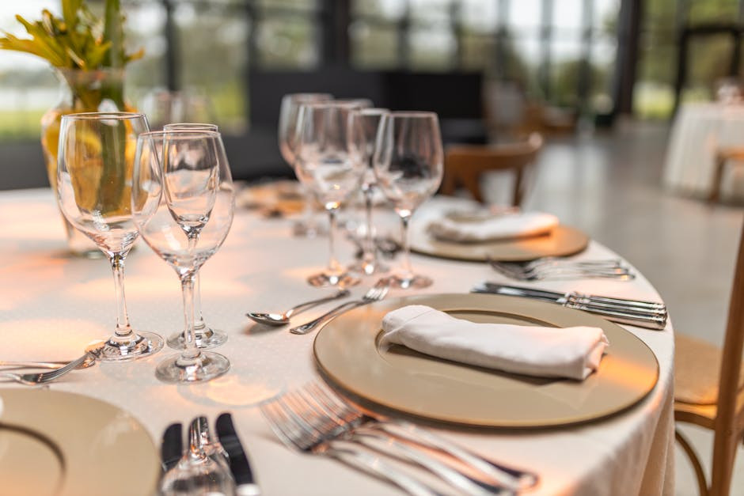

Scopri l'autentica eccellenza culinaria italiana, piatto dopo piatto.
Akemboll Layer ti guida attraverso i migliori ristoranti consigliati, dalle storiche trattorie alle vette dell'alta cucina.
Esplora la GuidaI Nostri Servizi Editoriali
Selezioniamo con cura le mete gastronomiche più esclusive per offrirti un panorama completo della ristorazione di eccellenza.
Recensioni Ristoranti Dettagliate
Analizziamo e selezioniamo con attenzione i migliori locali per offrirti solo ristoranti consigliati di altissima qualità in tutta Italia. Le nostre valutazioni sono rigorose e indipendenti.

Guida alle Trattorie e Osterie
Un viaggio emozionante alla scoperta della cucina tradizionale, premiando i luoghi storici che custodiscono i veri sapori di una volta. Celebriamo l'anima rustica della gastronomia locale.

Alta Gastronomia e Innovazione
Esploriamo le tendenze più avanguardistiche e l'eccellenza dei grandi chef che stanno ridefinendo la gastronomia italiana, offrendo esperienze culinarie indimenticabili.
La Nostra Missione Editoriale
Akemboll Layer è il tuo punto di riferimento indipendente per orientarti nel vasto e affascinante mondo della gastronomia locale. Ispirandoci a progetti editoriali prestigiosi come 50 Top Italy, valutiamo con estremo rigore la qualità delle materie prime, il livello del servizio e la vera identità culinaria di ogni singolo locale.
Che tu stia cercando l'eleganza di una cena stellata o il calore della vera cucina tradizionale servita nelle osterie di paese, la nostra missione è portarti esattamente dove il cibo diventa arte, attraverso recensioni ristoranti sempre autentiche, trasparenti e appassionate.


Domande Frequenti
Come selezionate i ristoranti consigliati?
Trovo solo alta cucina o anche trattorie?
Le vostre recensioni ristoranti sono aggiornate?
Come posso segnalare delle osterie meritevoli?
La guida copre tutte le regioni d'Italia?
Cosa Dicono i Nostri Lettori
"Grazie a questa guida ho scoperto osterie incredibili e autentiche durante il mio ultimo viaggio in Toscana. Consigli preziosissimi."
"Le recensioni ristoranti sono sempre precise, obiettive e mai banali. Ormai consulto sempre il sito di Akemboll Layer prima di prenotare una cena importante."
"Una selezione eccellente di cucina tradizionale che rispetta davvero le radici italiane senza cedere alle mode passeggere del turismo di massa."
Invia una Segnalazione
Conosci trattorie storiche o ristoranti consigliati che dovremmo assolutamente recensire? Scrivici i tuoi suggerimenti.